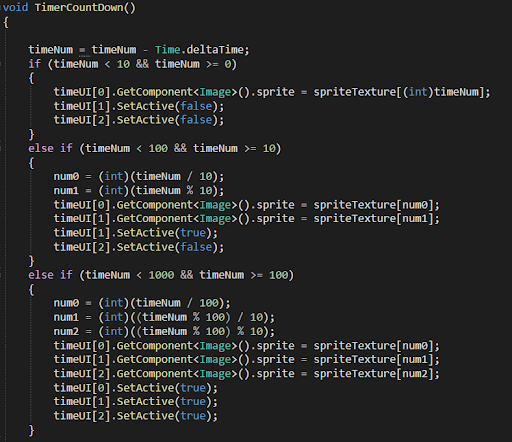

This week we decided to make our project a complete game. We all agreed that we were behind schedule, so we planned to keep working on our MVP to make it a complete game which is step two on our workflow. In the sprint meeting, we decided to have a timer in our game. Once the timer counts down to zero, then game over. A scene will show the player’s score and the player can press a button to go back to the menu.

We had a discussion about how we chose the feature to add into our game. We planned that if any of our members want to add a feature, he has to make a post in the Discord group and wait until the post gets the majority vote.
And after I finished my sprint part, the game met some serious issues. The game was collapsed, starting from the menu to the end of the game, something went wrong, so I jumped in to fix the issues.
I got the timer feature part. About how to make a timer, I received some suggestions from Joshua and our professor James. They suggested that I could perform the timer in text but I preferred trying to have a sprite switching so it can give more room for designers. Maybe for this game, it is not necessary, but I hope the feature can be used in our future, even in our other projects. It is challenging, but I would love to give it a try.
I set up a timeUI array to put the first digit (ex. 1 in 156), the second digit (ex. 5 in 156), and the third digit (ex. 6 in 156). I also set up a sprite array to store the sprites asset from 0 to 9.
After all these values have been set up, the timer can work by swapping the sprites to show the correct number. I want the UI to be clean, so I turned off the UI which is not used in the scene.
Timer in the game looks like this:

Then just before we tried to build our game and sent it to our mentors. We noticed that the game had collapsed. The menu scene didn’t work properly. I removed the broken part of the objects in the scene and added the good ones to fix the issue.
At this moment, the game is a completed game. We will keep working on it to polish it. A quick peek of the game: